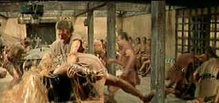
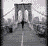

| Spartacus (SE)/ A,B+ |
| Criterion/1960/196/ANA 2.20 |
Every new excuse to watch Spartacus is
a privilege. The latest DVD incarnation of this wonderful film is a new anamorphic transfer
released and produced by Criterion.
Spartacus is an exciting film to watch on many levels. For pure action
adventure, the early training and revolt scenes are thrilling. In terms of epic scale, the sweeping
depiction of the ultimate clash between Roman legions led by Crassus and the rebel army is
majestically choreographed by director Stanley Kubrick. The long pan over the legion of dead
twisted rebel bodies alone is worth owning this DVD set. But Spartacus is not just a
physical assault on the senses; the political battle for the future of Rome is depicted in exciting
fashion in the philosophical clash between Gracchus, spiritual leader of the Roman senate and the
aristocratic Crassus. The intellectual battle for Rome takes place in beautifully designed sets of
the Senate chambers and Roman baths.
The more I watch this film the more I appreciate the economical romantic
development. Spartacus courts Varinia with an elegance that belies his origins, a
surreptitious courtship accomplished with beautiful short strokes: a touch of hands, an exchange of
looks, a breathlessness when they are in close proximity. The romance humanizes the than life
figure of the rebel leader. It also provides softer interludes between the more powerful cogs
in the Spartacus engine. Alex North's score adds great delicacy and beauty to the scenes
between Spartacus and Varinia.
An exquisite example of the power of the combined film elements is the
bouts of the matched pairs. When Spartacus and Draba, played by Woody Strode, stalk and
slash each other round the confines of the gladiator ring, Alex North's magnificent score achieves
it finest moments. The strains of North's music match perfectly to the movement of the actors and
this becomes a ballet-like set piece, a precious gem adorning the overall wonderful production. For
more than eight minutes the high drama of the bout builds with no dialogue whatsoever and
ultimately culminates in a scene restored from the fangs of the censors when Olivier's Crassus
executes the final thrust of the ballet, the last note of music written in a spray of blood upon
Olivier's face.
This beautifully made film is enriched by a variety of fine performances.
Although Kirk Douglas has often been accused unfairly of
being a one-dimensional actor, it is the animal intensity of Douglas's screen presence that infuses
Spartacus with incredible power. Every close-up extracts levels of character that scripted
dialogue or action would be hard-pressed to express. Douglas's hardened, sculpted physique
perfectly represents the image of the fiery gladiator. The physicality of this performance exists
internally as well as externally and ranks with the best screen appearances of Kirk Douglas.
In perfect compliment to Douglas's Spartacus Laurence
Olivier's Crassus is effete. Olivier's patrician portrayal is a masterful exhibition of an actor
acting. While Douglas's footprints are deeply embedded impressions, Olivier glides effortlessly
over the slick path of aristocratic misdeeds. Charles Laughton does a marvelous turn as Gracchus,
portraying the senator in cynical bravura fashion. Laughton's scenes with Peter Ustinov are
thoroughly enjoyable. Ustinov was honored with the Best Supporting Actor Award for his convincing
interpretation of Lentulus Batiatus, owner of the gladiatorial school. Ustinov's subservient pious
posturing masked a fascinating portrait of a survivor. All the style and mannerisms that comprise
the breath of Ustinov's physicality are richly wielded by the actor at his best. The
characterizations and sub-plots that exist within Spartacus raise the level of the overall
production. And there's no denying the chemistry that Jean Simmons playing Varinia generates with
Douglas. I enjoyed the evident relish with which Charles McGraw leered at Spartacus playing former
gladiator Marcellus, Batiatus's head trainer.
|
 |
|
Soup de Marcellus. ©Universal |
The special edition DVD release of Spartacus is bursting with
information, primarily from the intelligent commentary tracks originally released on the Criterion
1992 special edition laser disc box set. You can listen to one track featuring appropriate
scene specific commentary by Kirk Douglas, Peter Ustinov, novelist Howard Fast, producer Edward
Lewis, designer Saul Bass and restorer Robert A. Harris. Another track includes scene analysis
written by screenwriter Dalton Trumbo in response to the rough cut of the film.
The multi-layered battles of Spartacus did not all appear on the
screen. Behind the scenes, author Howard Fast was battling to make the film of Spartacus
faithful to his book, particularly his vision of Spartacus the man. On the commentary track
Fast complains that Douglas's Spartacus is too physical, not the thinker that he depicted in
his novel. Peter Ustinov and Charles Laughton have a battle plan of their own; shaping their
characters and dialogue to suit their own egos. Then there is the battle of the blacklist:
screenwriter Dalton Trumbo, hired under his own name to script Spartacus, had for almost a
decade been on Hollywood's odious blacklist. Douglas, whose company produced the film, opted to
break the blacklist by standing by the credit for Trumbo, notwithstanding threats from the Legion
of Decency, and other organizations ready to picket the film. In some ways, Douglas's stand was the
most heroic battle of all considering that blacklist backlash could have given Spartacus a
greater thrashing than the might of Rome's legions many centuries before the film.
From Kirk Douglas we learn that he never wanted to hire the first
director, Anthony Mann, but was influenced to do so at the insistence of the studio. According to
Douglas, Mann was dismissed after two weeks of shooting, even though virtually all of the footage
he filmed remains in the opening scenes. Douglas, it seems, was involved at every level of
production, from casting concepts to interpreting the character of Spartacus for the screen.
Edward Lewis, producer of Spartacus, has a slightly different tale of Mann's leaving the
production, claiming that Mann asked to be relieved lamenting that" the picture would kill
me."
Howard Fast criticizes the film often with a sense of pride that undercuts
the thrust of his points. It seems that Fast is really more concerned with the realization of his
own conception that of the ultimate success of the filmed Spartacus. Undoubtedly, Fast
harbors some resentment that although initially hired to write the script, Dalton Trumbo was
brought in to do a major rewrite. In all fairness to Fast, however, he does rightfully place the
greatest scenes of the film at the gladiatorial school.
Robert Harris is extremely informative taking us through much of the
battle to restore Spartacus from the deterioration the surviving prints had gone through.
The successful restorer is a Sam Spade finding the real black bird. Bits and pieces to the puzzle
that fits together as the final restoration are located by chance as well as diligence. Harris's
analysis and commentary at appropriate scenes adds another level to the enjoyment of the
production.
Peter Ustinov, both in the audio commentary and the later taped interview,
is not only intelligent in his observations and remembrances, but often hilarious. Ustinov is fond
of imitating Charles Laughton, and while this may grow tiresome to a degree, suffering the excess
is well worth the resultant hilarity. Ustinov also easily digresses from Spartacus and
probably should have been better edited.
The presentation of the Trumbo comments has been handled in an interesting
fashion by the production team. Trumbo, who died in 1976, had composed voluminous notes in response
to his viewing of the rough-cut of Spartacus and it is from them that his comments have been
culled. It is interesting to note that while some of Trumbo's comments are extraordinarily
insightful, others are so off base it is difficult to believe they have originated through the same
thought process. At one point he actually suggests that the slave performers dancing before the
next day's battle should be cast with a top-notch dance company to enact a major set piece that
will blow the audience away. Regardless of inconsistencies in his point of view, Trumbo's comments
do offer a precious glimpse into the mind of one of Hollywood's great screenwriters.
Trumbo is also the credited author of the restored "Oysters and
Snails" scene, and while the scene is truly sexually tame by any reasonable standards, what
does stand out is the superiority of the writing. The politically sophisticated scene is
particularly important in understanding the thinking of Crassus toward "his" Rome.
One regrets that there is no Stanley Kubrick commentary on the soundtrack,
but the acceptable explanation for this seems to be that Kubrick never really considered this a
"Kubrick" film. He was brought into it during production and consequently his script
input was effectively reduced. The extraordinary fashion in which the technical aspects of the film
have been captured are certainly a tribute to Kubrick's command of the medium. Ultimately, though,
it is difficult not to call this a "Douglas" film.
The new anamorphic transfer of Spartacus enhances
the grand epic vision with remarkable clarity in the battle sequences, capturing the breathtaking
sweep of the countryside and the fervor of battle alike. At the same time, the excellent balance of
light provides a better pathway into the psyche of the characters. Fires rages under the eyes of Spartacus.
There is some excess edge enhancement noticeable in some instances. Check out the picket bars of
the gladiator stockade. Too many edges. Enormous care has been taken to render colors cleanly and
accurately. Examine any one of the many crowd sequences and you will find even small faces
remarkably in focus. Details in the shadowed and dark scenes are clearly discernible due to the
superiority of the transfer. Take the opportunity to check your pluge pattern on the color bars
provided on the disc and make sure the balance of brightness is correct. Properly adjusted monitors
will illuminate difficult scenes that depend on shadow detail, like when Spartacus first
meets Varinia. There is no doubt that great pains have been taken to achieve the closest possible a
transfer as close to Kubrick's vision as possible. Color saturation in excellent. Look at the lush
dark blood red of Varinia's garment as ship raps herself from after her bath. The Dolby
Digital 5:1 sound is clean and shows off the Alex North score handsomely.

The Movie Poster Archive includes extensive poster images from the films of stars like Susan Hayward, Kirk Douglas, Katharine Hepburn and many more. Our featured star is Kirk Douglas.

Selections from the Feature Archive
include articles on Akira Kurosawa, Frank
Darabont, Blonde Bimbos, Hollywood Street Gangs, or Vietnam: The
Hollywood Pariah, and many more....
Roman
Holiday
Join the editor and his family on a trip through Roman movie sites in this unusual feature.

A new Films on Disc space dedicated to purging accumulated home
theater angst and other movie related frustrations, with a measure of praise to balance the
vitriol. The first column takes on:
Inserts and the Pop-Up Window

The Adventures of Baron Munchhausen/A,A-

Director Terry Gilliam's richly detailed interpretation of the outlandishly
imagined and fabricated exploits of the legendary eighteenth-century German adventurer and
storyteller

Click on the DVD MIA symbol for
profiles of DVDs missing in action.
Add films to the DVD MIA Master List by filling out
a simple form. Click Here

Imaging Science Foundation
The Imaging Science Foundation promotes proper standards in home theater viewing. ISF trained
technicians offer monitor calibration services to consumers. The difference in a properly
calibrated monitor can be astounding. Click on the image to find an ISF member near you.

Home Vision Cinema
Classic and foreign motion pictures on VHS tape. The title
selection is excellent and informative essays are provided for many of the films.

Home to The American Society of Cinematographers. Includes features from
American Cinematographer Magazine and more...
 Brad Lang continues to add more interesting material to the extensive
collection at Classic
Movies. Everything from actors and actress to your favorite directors is
linked at the site.
Brad Lang continues to add more interesting material to the extensive
collection at Classic
Movies. Everything from actors and actress to your favorite directors is
linked at the site.
 A huge selection of French movie
posters with images galore. Don't miss this site if you ate interested in lovely French posters.
A huge selection of French movie
posters with images galore. Don't miss this site if you ate interested in lovely French posters.
Large variety of movie posters for sale now specializing in Polish and Japanese paper. Easy interface and a Soho gallery storefront.


Reviews of affordable remote controls in the market place. Codes
and tips as well.
 ETEKNet is the web's only 24-hour, totally FREE source for all your home theater,
DVD, Dreamcast, PC, and Networking tech support needs!
ETEKNet is the web's only 24-hour, totally FREE source for all your home theater,
DVD, Dreamcast, PC, and Networking tech support needs!
|
Home Theater Talk
Cartoons |

 Kinoeye Archive
Kinoeye Archive
This is a resource of all content-rich
materials on the web relating to Central and East European cinema. The ultimate aim of the Kinoeye
Archive is to provide a near-as-damn-it definitive index of intelligent and thoughtful
English-language analysis of Central and Eastern European cinema on the web.

Images is a non-commercial Web site created for everyone who enjoys movies and popular culture.
Images is published quarterly; however, new reviews will appear each week, so check back often.

ISF Monitor Calibrations in the
Tristate New York area. Lots of hardware info and frequent hardware peaks from video expert Kevin
Miller.They may be judgmental, but that's the point, isn't it. Lots of DVD reviews plus news and
more.

The Movie Poster Archive includes extensive poster images from the films of stars like Susan Hayward, Kirk Douglas, Katharine Hepburn and many more. Our featured star is Errol Flynn.